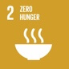
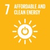

We endeavor to be a trusted corporate citizen in each of our communities.
We determine material topics and boundaries by engaging with key stakeholders, benchmarking against industry peers, and considering disclosure requirements and guidelines issues by various institutions and regulatory bodies.
We are proud to be a trusted corporate citizen dedicated to growing our business responsibly and minimizing our carbon footprint wherever possible.
Committed to a more sustainable world
We endeavor to be a trusted corporate citizen in each of our communities. We maintain strong ties to each community by encouraging open dialogue with local plant management and through our longstanding commitment to being a local employer. We also support the economic and social well-being of our communities through tailored social development programs.
Given the nature of our operations, we maintain a ‘health and safety first’ attitude at every plant. We invest heavily in the best available technologies to minimize our carbon footprint and develop cleaner products, and aim to achieve zero safety incidences across the group by continuously investing in our employees’ training and development.
We believe in the importance of business transparency and stakeholder engagement as a tool to effect change and sustainably grow our business. We strive to maintain an open dialogue with our stakeholders to ensure our strategy, activities, and policies are implemented responsibly, and aim to nurture our stakeholders’ trust in OCI through our interactions.
In addition to our direct stakeholder interactions, we are an active member of several industry associations where we work with our peers to sustainably improve global standards in our industries, and engage in dialogue on key global challenges related to our industries.
In addition to local memberships at the plant level, OCI’s memberships include:
We believe our activities contribute to achieving the following goals, and aim to support additional goals in the future:
Goal
OCI contribution

Our nitrogen fertilizers allow farmers to increase crop yields and improve food quality, resulting in improved food availability and improved diets.
Community engagement with local charities provides food security at a local level, which helps improve income and access to education.

Our industrial chemicals, namely methanol, biomethanol, and DEF, are sustainable clean fuel alternatives that can be used to significantly reduce GHG emissions versus conventional fuels.
Distribution of economic growth ensures the financial wellbeing of employees and the communities in which we operate.
Good workplace practices as described in our Code of Conduct and other policies promotes a safe and encouraging workplace, diversity, and equal opportunity.
Nutrient stewardship promotes effective crop yields that improve farmers’ returns.
We strictly maintain safe, environmentally responsible production sites that protect local environments and ensure safe communities.
Our investment in maintaining state-of-the-art production facilities, coupled with our GHG targets allows us to minimize our emissions and consequently out impact on climate change.
Our commitment to educating farmers on nutrient stewardship allows them to maximize yields at optimal fertilizer application. This in turn reduces soil nutrient loss, protects from deforestation, and minimizes runoff to groundwater.
Case study
Making strides through local programs
In the United States, we are members of The Fertilizer Institute (TFI), which spearheaded the 4R Nutrient Stewardship program.
Our contribution to meeting a global challenge. We are committed to working towards global food security. Through various programs, we work with our customers around the world to maximize yields, strengthen crops, and accelerate growth to meet the world’s rising food demands. We also work to ensure our products are used in a way which safeguards health, occupational and public safety, the environment, and ensures security.
The world continues to face a significant challenge in ensuring a sustainable supply of food for our burgeoning global population, which is expected to reach 10 billion people by 2050. This is expected to require a doubling of food production levels, all while arable land is projected to decline by 35% by 2050.
With growing populations and declining resources, crop yield optimization through efficient fertilization is imperative to meet our global food needs.
Nutrient stewardship
OCI’s fertilizer products help achieve sustainable agriculture by providing an effective and environmentally sound source of nitrogen, the key nutrient required for crop growth and development. By using nitrogen fertilizers, farmers can:
grow more food on their land,
reduce soil nutrient loss and improve soil quality, and
reduce the need for new farmland to be sequestered, which therefore reduces greenhouse gas (GHG) emissions by limiting deforestation.
Related links
About us
OCI is a leading global nitrogen fertilizer producer with over 9.6 million metric tons of capacity…